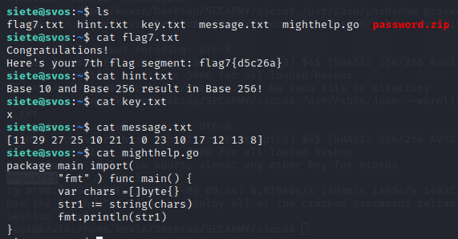
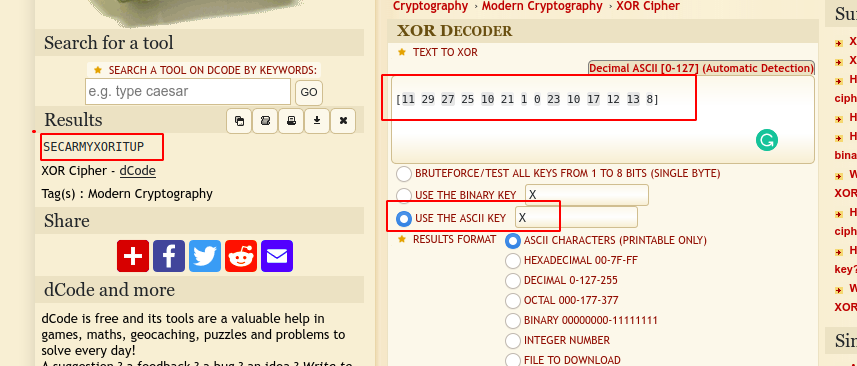
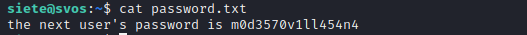

Flag7
siete:6u1l3rm0p3n473
That go script is a rabbit hole and is of no use. We see here that we are given numbers and a ASCII key(i.e. x) and we expect output in ASCII(password) so let's XOR it with key x
Visit:
https://www.dcode.fr/xor-cipher
So we got the creds for password.zip and here we get the password on unzipping
